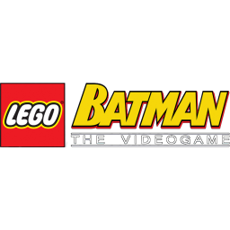

 LEGO Batman: The Videogame
Details
Description
Continuing the tradition of adapting known franchises such as Star Wars and Indiana Jones with visuals based on LEGO, this game takes on the Batman universe. The basic concept is the same, with characters and objects built up using LEGO blocks, but here shown against surroundings drawn in a regular fashion. Most of the environments are side-scrolling with a fixed camera perspective, but in 3D with quite some depth.
It is not based on a certain movie or comic, but on the franchise as a whole with a new story. The animations and sequences are rather quirky and share nothing with the darker atmosphere of the contemporary Batman movies. A cast of villains has escaped from Arkham Asylum and now roam through Gotham City wreaking havoc. The first half of the game, players control Batman and his sidekick Robin to take on all enemies with typical brawler gameplay. Enemies will often respawn endlessly until the player figures out how to progress. The environments can be explored using a number of gadgets such as the batarang and the grappling hook, and players can switch between the two characters at any time. They can both fight and the inactive character is always controlled by the computer AI. Both characters have unique powers they can access by changing their suits. Batman can then glide through the air or plant bombs, while Robin has for instance a technology suit that allows his to walk on metal surfaces in any direction. They can also drive certain vehicles.
Both characters operate out of the Batcave that acts as a central hub to store trophies and access missions. Many of the missions have small puzzle elements with buttons or passages that need to be cleared. Objects and characters explode into smaller LEGO blocks and at certain sections the hero need to build structures with blocks to create new objects. After completing a mission in the story mode, it becomes available in a separate free play mode.
In the second part of the game players take control of the different villains such as Poison Ivy, The Joker, Mr Freeze, The Riddler, Killer Moth, Hush, Clayface, Man-Bat and more. They all have different powers and their section of the game always ends at the moment they are confronted by Batman and Robin. This way, the game shows how they set up their plans prior to the fights in the first part of the game. The characters collect coins, objects and hearts. Even though they can die, they immediately respawn.
Multi player options vary between platforms. Home console and Windows versions allow drop in/drop out co-op. The PSP release fares worst of all and does not contain any kind of multiplayer option.